榮文生醫與中山附醫共同發表乳癌 CTC 研究，登上 MDPI Diseases
榮文生醫與中山醫學大學附設醫院合作研究正式發表於 MDPI《Diseases》，論文顯示以自動化負向篩選平台量測 CSV+ CTC，可作為乳癌轉移風險分層與復發監測的重要參考。
依時間掌握榮文生醫的展會活動、合作進展、媒體報導與品牌動態。
目前公開 40 則內容
榮文生醫與中山醫學大學附設醫院合作研究正式發表於 MDPI《Diseases》，論文顯示以自動化負向篩選平台量測 CSV+ CTC，可作為乳癌轉移風險分層與復發監測的重要參考。

四天的展期在滿滿的交流、分享與專業互動中圓滿結束。今年，我們迎來來自東南亞多國的嘉賓蒞臨展位，對循環腫瘤細胞（CTC）技術展現高度興趣，讓國際精準醫療的合作更加深入、前瞻。榮文生醫強大的博士團隊的專題分享吸引眾多專業人…

2024年度Medical Fair Asia展覽於9月11日起至9月13日止於新加坡金沙會展中心舉辦，此展覽為全球最大德國MEDICA展於亞洲之授權地區展，可說是東亞最大規模之國際醫療器材展，在此風光明媚的花園城市…

我們很高興宣佈，Wellspring即將成為榮文生醫在馬來西亞的合作夥伴！ 雙方將在未來展開更深入的商務合作和專業教育訓練，共同探索醫療健康領域的無限可能。

英業達（2356）旗下榮文生醫，為因應日漸提升的循環腫瘤細胞檢測需求，攜手集團夥伴英華達打造循環腫瘤細胞自動檢測系統「循體欣」...
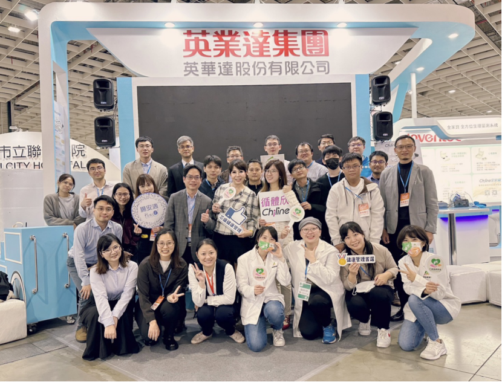
「2023台灣醫療科技展」於11月30日至12月3日在南港展覽館盛大舉辦，英華達本年度持續聚焦於「雲端健管－全家寶全方位生理量測系統」、「智慧醫療－思邁輸液系統」及「精準醫學－循體欣循環腫瘤細胞自動檢測系統」三大醫療健…

英業達集團旗下子公司榮文生醫/英華達共同合作開發循環腫瘤細胞（CTC）自動化檢測設備，以All-in-One 的設計,落實Sample-in、Data-out的全自動化檢測模式，能夠透過抽血檢測得知血液中CTC數值及分…

亞洲盃最終站-泰國曼谷，英華達全家寶、思邁、循體欣團隊以及我們的好夥伴-芯盛健康管理聯手出擊。東南亞一年一度最大的醫療盛會於9/13至9/15在泰國首都曼谷盛大舉辦...

榮文生醫總經理曾慶安感謝各位貴賓蒞臨榮文生醫新居落成茶會，讓活動圓滿完成，更特別感謝英業達葉會長替我們揭牌慶祝...
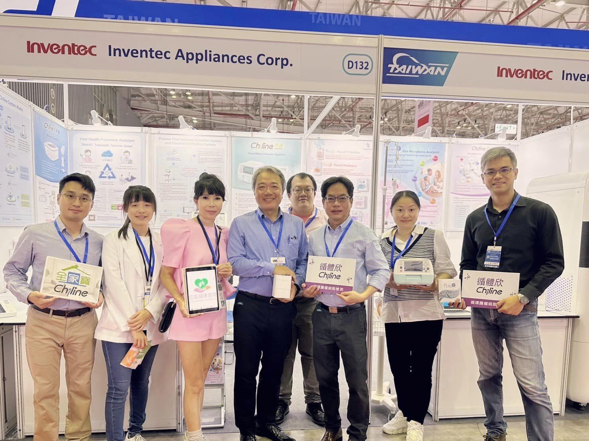
亞洲盃第三站-越南胡志明市，英華達循體欣、全家寶、思邁團隊以及我們的好夥伴芯盛健康管理再次聯手出擊。有20年歷史的越南國際醫療、醫院及製藥展於8/3至8/5於越南經濟重心胡志明市盛大舉辦...
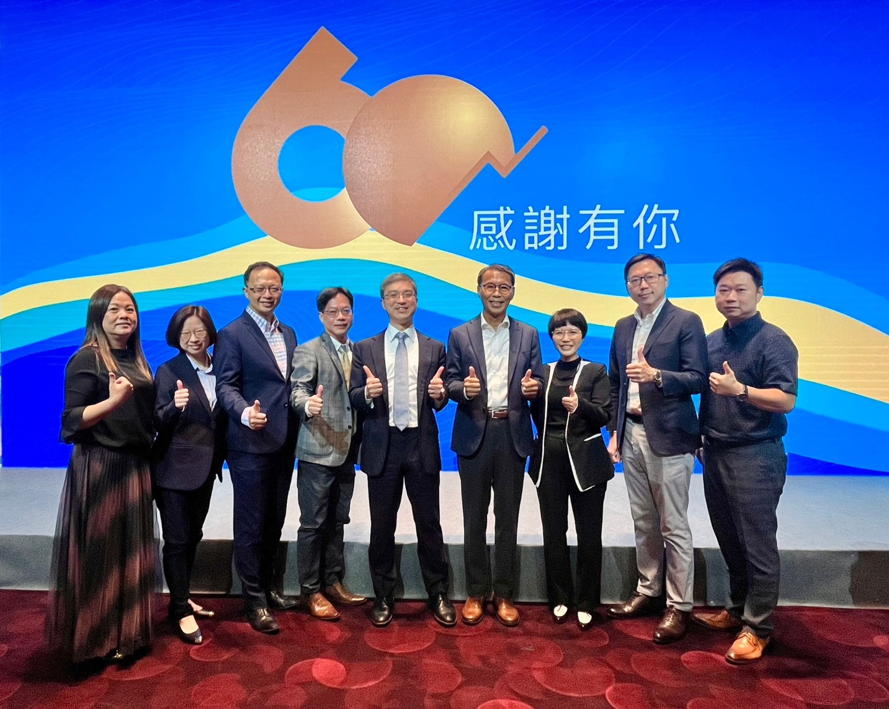
榮文生醫/英華達是少數受邀參加南山人壽60周年感恩茶會之合作夥伴，能夠與南山一起打造生生不息的「健康守護圈」，我們備感榮幸...

【榮文生醫知識家】 榮文生醫獨家CTC循環腫瘤細胞檢測，提供癌症早期篩檢及癌症術後追蹤，全方位守護您及家人的健康，就讓我們一起透過生動的動畫介紹，來好好認識「循環腫瘤細胞檢測」吧！
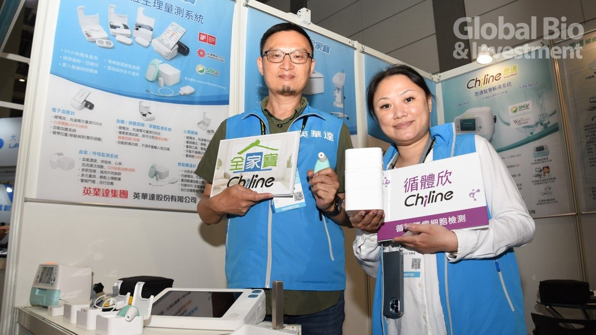
英華達是由英業達集團在2000年所創辦的子公司，以既有的平台整合與雲端應用等核心技術為基礎，為客戶進行新產品開發、設計與製造等服務；在資通訊(ICT)產業跨入醫療照護的全球風潮下，英華達也不缺席...

亞洲盃第一站-馬來西亞 英華達團隊以及我們的好夥伴芯盛健康管理，於4/19-4/21在馬來西亞一年一度的醫療盛會SEACare SE-Asian Healthcare & Pharma Show中盛大展出。精采影片回顧…
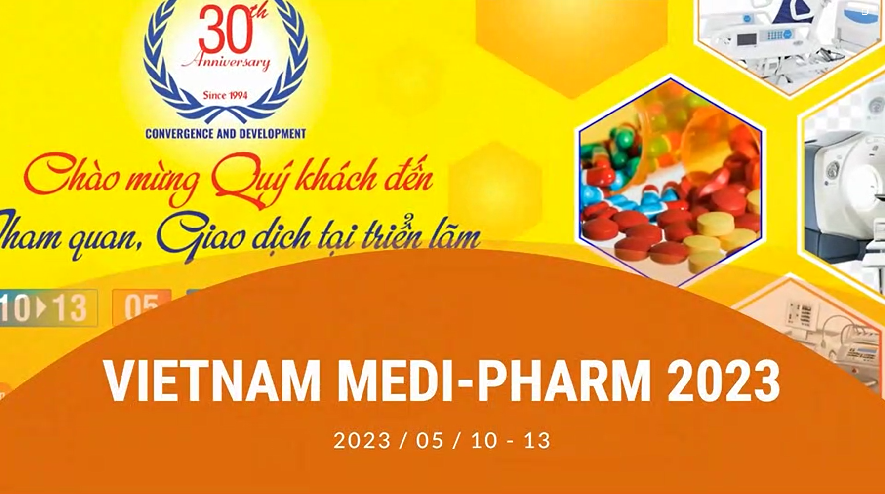
亞洲盃第二站-越南 英華達團隊以及我們的好夥伴芯盛健康管理再次聯手出擊。有30年歷史的越南國際醫藥製藥暨醫療器械展於5/10至5/13於越南首都河內盛大舉辦...

4月25日News98、榮文生醫、全家寶於敏盛智醫城共同舉辦「精準健康醫療講座」。本次講座特地安排榮文生醫的當家博士林志鵬博士向聽眾介紹由榮文生醫推出的「CTC 循環腫瘤細胞檢測服務」...
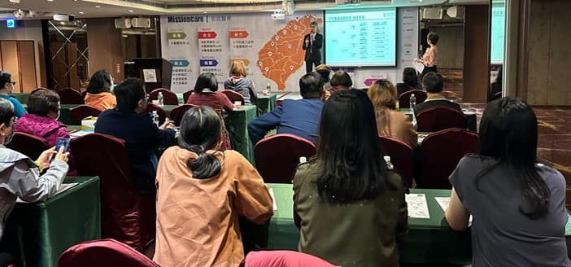
4月25日News98、榮文生醫、全家寶於敏盛智醫城共同舉辦「精準健康醫療講座」，講座圓滿大成功...
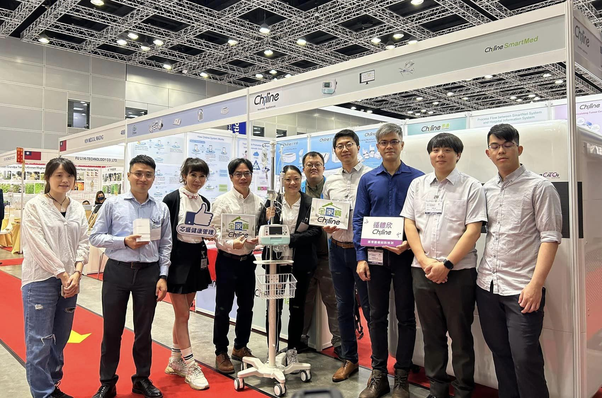
英華達團隊以及我們的好夥伴芯盛健康管理於4/19-4/21在馬來西亞一年一度的醫療盛會SEACare SE-Asian Healthcare & Pharma Show中盛大展出...
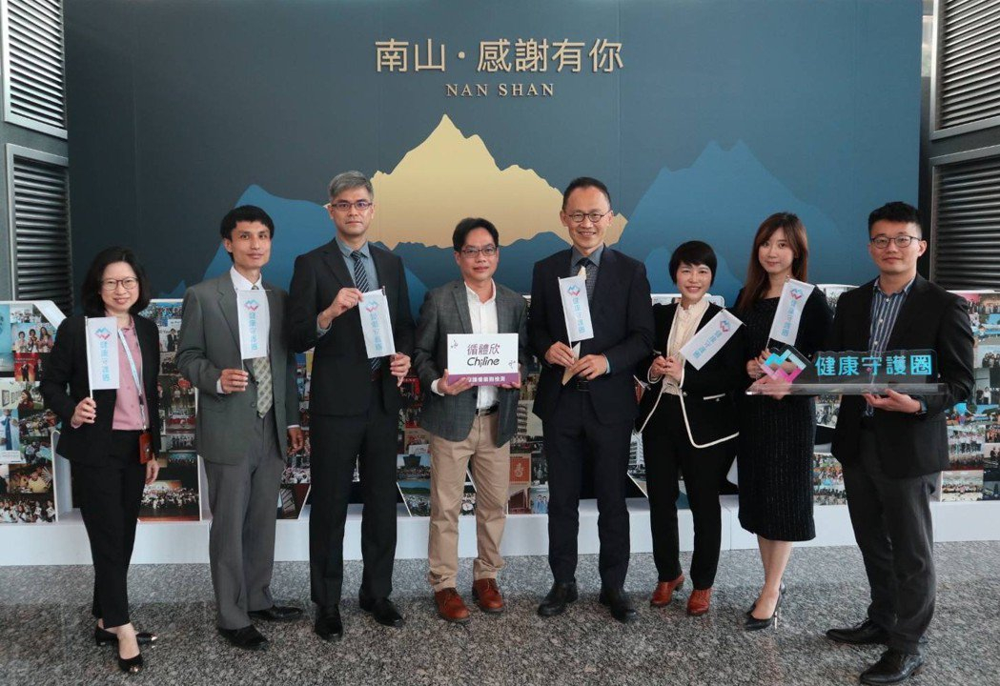
英業達集團旗下榮文生醫自創立以來，便致力於研發和推廣「循環腫瘤細胞檢測」（Circulation Tumor Cell檢測，以下簡稱CTC檢測），並積極拓展異業合作。近日與南山人壽健康促進外溢保單合作，結合傳統的腫瘤生…

英業達集團英華達公司旗下的榮文生醫與全球人壽宣佈進行異業合作，共同推出符合健康促進的外溢保單。保戶透過榮文生醫的「循環腫瘤細胞檢測」(Circulating Tumor Cell檢測，以下簡稱CTC檢測)主動進行癌症篩…

英華達和榮文生醫在今年(2022)台灣醫療科技展中，發表「智慧醫療」、「雲端健管」及「精準醫學」三大醫療健康主軸產品，分別為「思邁輸液系統」、「全家寶全方位生理量測系統」與「循體欣循環腫瘤細胞檢測系統」，每個都是今年展…

一年一度最具代表性的台灣醫療科技展將於12/1~12/4在南港展覽館盛大展開。 榮文生醫與英華達今年的參展攤位大小是去年的兩倍之大，展示更加豐富多元的醫療產品以及各種創新的應用與服務，帶給民眾最新的醫療科技（攤位號碼：…

泰國PMG Hospital醫療集團（以下簡稱PMG)在泰國規模宏大，旗下有3家醫院、5家診所，並設有醫學實驗室，是泰國具指標性之醫療集團之一...
關於癌症篩檢、治療評估、復發追蹤，循環腫瘤細胞檢測如何成為輔助診斷新利器？隨著科技日新月異，癌症篩檢的工具也不斷更新...

中山醫學大學附設醫院曾志仁副院長獻聲力挺！曾副院長提到，透過抽血來進行血液中癌細胞的檢測，可以提供罹癌風險的評估以及監測癌症是否復發...
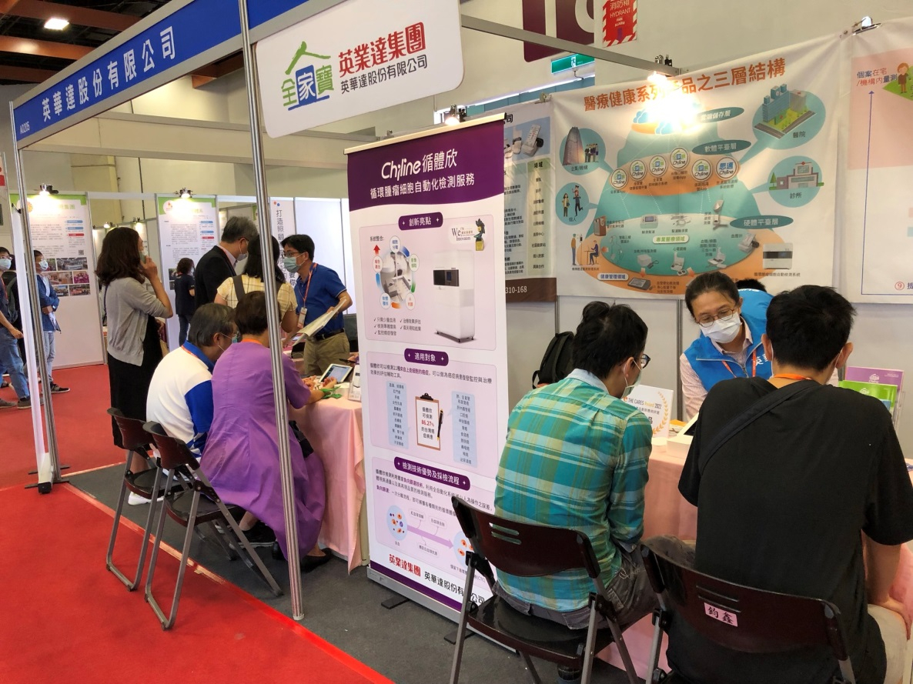
榮文生醫「循體欣」循環腫瘤細胞檢測服務及英華達「全家寶」全方位生理量測系統雙強聯手，於2022/9/15~2022/9/17連袂參加「The Cares Taipei 2022 第三屆台北國際照顧科技應用展」。

「2022臺泰智慧醫療國際研討會」由彰化基督教醫院於9月6日在曼谷舉辦，此次活動是COVID-19疫情後泰國最大規模的智慧醫療研討會，榮文生醫受邀於現場進行專題演講，由林志鵬博士以「循環腫瘤細胞檢測系統(CTC)」為題…

英華達林志鵬博士受邀至成美健康集團【成美早餐會】直播節目，專題介紹循環腫瘤細胞檢測(CTC)，向民眾深入介紹這項抗癌新利器。林博士在節目中解釋了技術原理，也說明相較於其他常規癌症檢測方法(如生化指標、影像學、病理切片等…
榮文生醫洪偉珊博士至News98電台【名醫時間】直播節目，與英華達林志鵬博士一同帶領大家學習利用液態切片（循環腫瘤細胞 CTC）進行腫瘤篩檢，同時也邀請品心診所林邵臻醫師與民眾分享她在臨床上的豐富經驗...
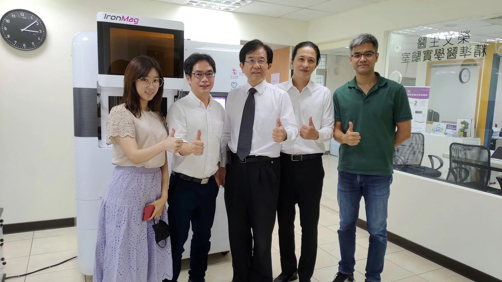
榮文生醫為敏盛醫療集團的合作夥伴，繼本公司曾慶安總經理於7/21應邀參加敏盛醫療集團47週年院慶後，今日(7/27)敏盛綜合醫院陳興漢醫療副院長也親臨榮文生醫參訪，雙方互動熱烈。...
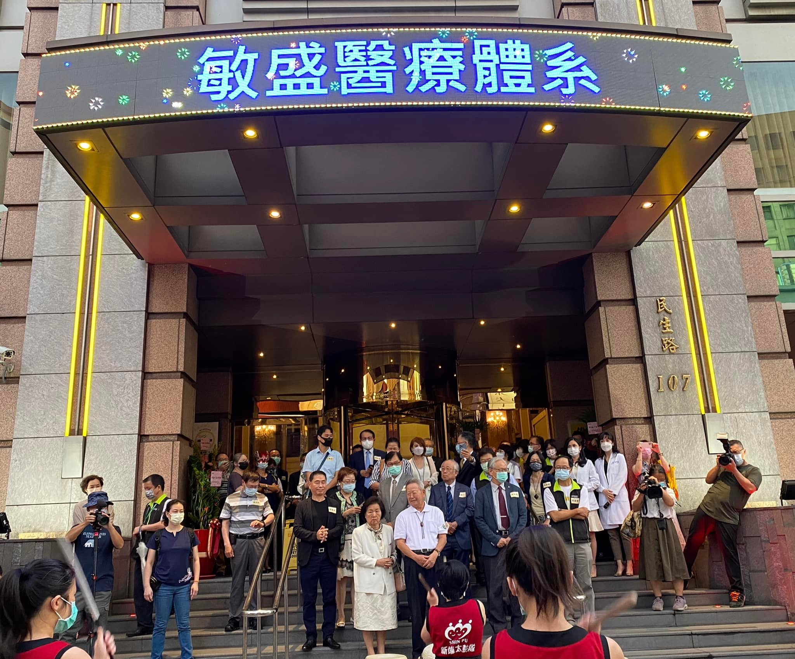
桃園敏盛醫療集團7月20日在「敏盛智慧醫療城」舉辦溫馨慶47年院慶。「英華達-全家寶」與「榮文生醫-循體欣」以合作廠商身份應邀出席院慶。位於桃園火車站附近的「敏盛智慧醫療城」，係由桃園翰品酒店改造而...

榮文生醫的「循體欣」是用液態切片[註]的方式來做癌症篩檢，只需要2c.c.血液，即可檢測國人常見的21種癌種(如肺癌、大腸癌、乳癌…等)。臺北榮民總醫院病理檢驗部於2019年採購由英華達與榮文生醫共同開發之IronMa…
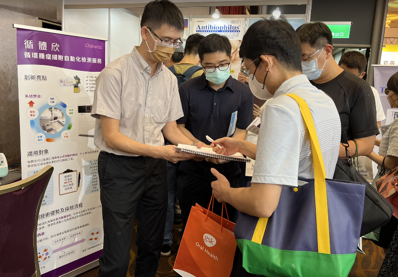
台灣家醫科的年度盛會-「台灣家庭醫學醫學會年度學術研討會」於7/10日在台大醫院國際會議中心熱鬧展開。本公司也躬逢今年盛會，到展會向全台家醫師們介紹榮文生醫的「循體欣」循環腫瘤細胞檢測服務，並與現場醫師們交流...
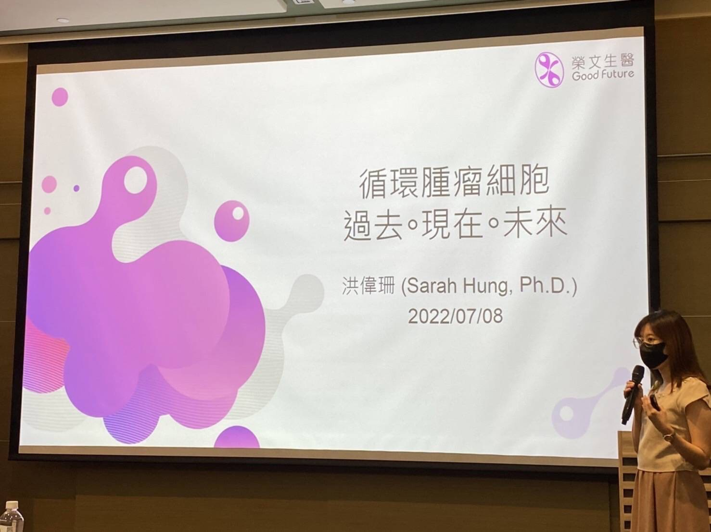
榮文生醫團隊於7月8日受邀參加由彰化基督教醫院和金屬工業研究發展中心共同舉辦的「2022癌症創新精準檢測實作工作坊」學術交流活動...

過去，癌症的確診主要依靠活檢技術。單一採樣之組織切片無法實時反映腫瘤的特徵。因此，我們非常需要一種更安全的採檢方法來獲取體內更全面及動態的信息，以即時反映癌症的發展和治療反應。近年來，科學家逐漸發展出“液態切片...

由本公司提出之「循環腫瘤細胞自動檢測系統運用於癌症精準化診斷方案之臨床評估」計畫，得到經濟部工業局的肯定，獲得「數位醫療產業發展與跨域推廣計畫」補助。本公司與英業達集團共同開發的「IronMag循環腫瘤細胞自動檢測系統…

智慧醫療產業之所以眾所矚目，在於台灣資通訊與醫療產業都是傲視全球的領域，「強強聯手」自然引人期待。台灣電子業巨頭競相跳入參戰，他們 經過三年以上摸索期後，各自發展出不同策略，誰是現階段的領跑者？」二○一八年，由美國新.…

生策會19日召開理監事會議，邀請英業達集團會長葉國一、富邦金控董座蔡明興、台新金控董座吳東亮三人擔任協會顧問，三位都是金融與科技界大老級人物，可望推動該領域業者跨域合作，並帶來資金挹注大生醫產業。科技業5哥佈局智慧醫.…

在全球擁有26,000多名員工的電子大廠英華達公司，為了跨入生醫領域，卻選擇和新創公司榮文生醫合作，共同開發全台最先進的癌症篩檢自動化系統。榮文生醫，這家位在桃園龜山的小公司，正掀起台灣癌醫檢測的新紀元。（延伸閱讀：榮…

英業達集團（2356）旗下英華達與榮文生醫合作、針對癌症精準醫療領域的液態切片檢測技術，共同開發的「IronMagⓇ循環腫瘤細胞自動化檢測系統」，於12月1日獲頒第十七屆國家新創獎的企業新創組之生技製藥與精準醫療類獎項…